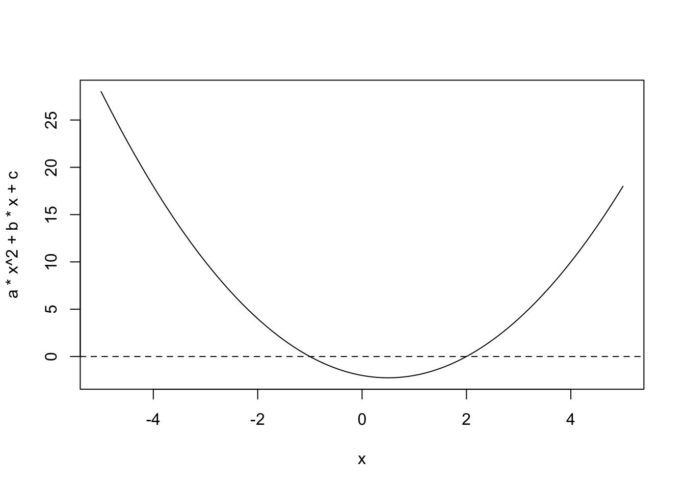

x <- 1
y <- 2
x + y[1] 3Your task is to produce a report in PDF that solves the quadratic equations \(ax^2+bx+c=0\) for \(a=1, b=-1, c=-2\) and shows a plot of the function to confirm the finding.
But after you are done, I will discover I made a mistake and ask you to rewrite the report with \(a=1, b=3, c=-2\) (or any number).
Then once you are done, I will like the report so much I will ask you to make an html page displaying the result and showing and explaining the code you used.
We will do all this using R, RStudio, Quarto, and knitr.
Before introducing Quarto we need R installed. We highly recommend using RStudio as an IDE for this course. We will be using it in lectures.

Let’s try a few things together:
Start a new Quarto.
At the top you see:
---
title: "Untitled"
---The things between the --- is the YAML header.
You will see it used throughout the Quarto guide.
italics, bold, bold italics
strikethrough
code
# Header 1
## Header 2
### Header 3
and so on
Just the link: https://quarto.org/docs/guide/
Linked text: This is the link to Quarto Guide

The image can also be a local file.
Bullets:
Ordered list
Inline: \(Y_i = \beta_0 + \beta_1 x_i + \varepsilon_i\)
Display math:
\[ \mathbf{Y} = \mathbf{X\beta} + \mathbf{\varepsilon} \]
The main reason we use Quarto is because we can include code and execute the code when compiling the document. In R we refer to them as R chunks.
To add your own R chunks, you can type the characters above quickly with the key binding command-option-I on the Mac and Ctrl-Alt-I on Windows.
This applies to plots as well; the plot will be placed in that position. We can write something like this:
x <- 1
y <- 2
x + y[1] 3By default, the code will show up as well. To avoid having the code show up, you can use an argument, which are annotated with |# To avoid showing code in the final document, you can use the argument echo: FALSE. For example:
[1] 3We recommend getting into the habit of adding a label to the R code chunks. This will be very useful when debugging, among other situations. You do this by adding a descriptive word like this:
x <- 1
y <- 2
x + y[1] 3Quarto has many nice features that facilitates publishing academic reports in this guide
If you want to apply an option globally, you can include in the header, under execute. For example adding the following line to the header make code not show up, by default:
execute:
echo: falseThere is a lot more you can do with R markdown. We highly recommend you continue learning as you gain more experience writing reports in R. There are many free resources on the internet including:
We use the knitR package to compile Quarto. The specific function used to compile is the knit function, which takes a file name as input. RStudio provides the Render button that makes it easier to compile the document.
Note that the first time you click on the Render button, a dialog box may appear asking you to install packages you need. Once you have installed the packages, clicking Render will compile your Quarto file and the resulting document will pop up.
This particular example produces an html document which you can see in your working directory. To view it, open a terminal and list the files. You can open the file in a browser and use this to present your analysis. You can also produce a PDF or Microsoft document by changing:
format: html to format: pdf or format: docx. We can also produce documents that render on GitHub using format: gfm, which stands for GitHub flavored markdown, a convenient way to share your reports.
Write a Quarto document that defines variables \(a=1, b=-1, c=-2\) and print out the solutions to \(f(x) = ax^2+bx+c=0\). Do not report complex solutions, only real numbers.
Include a graph of \(f(x)\) versus \(x\) for \(x \in (-5,5)\).
This is how you make a plot of a quadratic function:
a <- 1
b <- -1
c <- -2
x <- seq(-5, 5, length = 300)
plot(x, a*x^2 + b*x + c, type = "l")
abline(h = 0, lty = 2)
Generate a PDF report using knitr. Do not show the R code, only the solutions and explanations of what the reader is seeing.
Erase the PDF report and reproduce it but this time using \(a=1, b=2, c=5\).
Erase the PDF report and reproduce it but this time using \(a=1, b=3, c=2\).
Create an HTML page with the results for this last set of values, but this time showing the code.